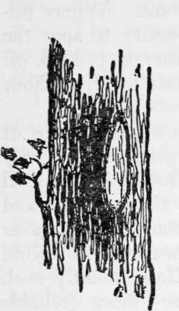
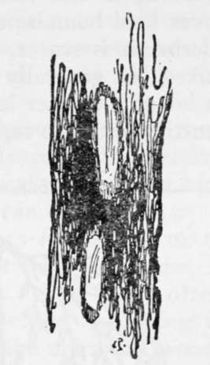
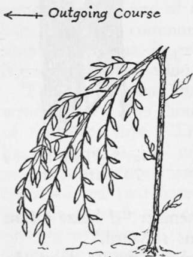

Pathfinding. Part 2
Description
This section is from the book "Camping And Woodcraft", by Horace Kephart. Also available from Amazon: Camping and Woodcraft.
Pathfinding. Part 2
Trail Making
Various kinds of blazed trails will be described in the next chapter. There is a way that I consider better for a man or a party venturing into strange woods where there are few if any old trails—better because it always shows which way camp lies, and because it takes much less labor than spotting trees so close together that the next blaze ahead can always be seen from the one preceding it. At such intervals as may be required, blaze a tree here and there along the course, with one spot on the side away from camp (Fig. 4) anei two on the opposite side (Fig. 5), Even when a man is bewildered he can remember "A blaze means tf-way from, two blazes means ro-ward".
Fig. 4. One Blaze /4-way from Camp.
Fig. 5. Two blazes To-ward Camp.
A blaze with a hack below it (simply drive the hatchet into the bark and draw it out) is easier and quite as effective. And between the blazed trees, at such intervals that you can see one from another, or as circumstances may require, make bush marks (Fig. 6). A bush mark is made by bending over the top of a green and leafy bush in the direction you are going, snapping the stem (if necessary clipping it half through with knife or hatchet) but letting it adhere by part of the wood and bark so that the under side of the bushy top will "look at you" when you return. The under side of the leaves, being of lighter shade than the upper, makes such a bush sign conspicuous in the woods. Marks like these can be made without slacking one's pace.
Where a bend in the trail is made, the blazes, instead of being opposite, should follow the bend, of course.
Blazing trees is prohibited on public lands, and the practice should be limited to remote regions where there are no regular trails. A blaze is everlasting, so long as the tree stands, and may cause trouble over land boundaries in years to come. Where underbrush is scarce, it may be necessary to spot the trees, but generally it will suffice merely to hack off a bit of the outer bark as big as your hand, without cutting into the sapwood.
The snow-laden limbs of low evergreen trees may droop so low as to conceal blazes on the trunks, and driving snow may cover them anyway, on any kind of tree. Consequently bush marks are more reliable than blazes in winter, if the snow is not too deep.
In average country, bush marks alone will suffice.
When going out on an old trail for the first timq make such a mark where-ever you might be in doubt on the return, as where the trail forks, or where it is overgrown or faint. If there are no bushes, jab a stick into the side of the trail, sloping toward camp, or arrange a few stones in the form of an arrow-head, pointing the way.
Of course, such precautions as these are only to be taken on new ground, and then only according to circumstances. Nowadays our wilderness travel is usually in regions where there are regular trails that are soon learned and which serve then as baselines, or where mountains, streams, lakes, and other physical features are so prominent that it is easy to learn the lay of the land.
Fig. 6. Bush Mark.
In thick woods, canebrakes, swamps, big thickets, and other places wrhere the course is necessarily very tortuous, a compass is of little use while one is on the march. Wherever the traveler can get an outlook he fixes on some landmark in advance, notes how the sun strikes him when facing the mark, and thenceforth averages up his windings as well as he can. The compass is only of service when he can no longer see the sun, and is in doubt as to the direction he is traveling in.
In the wilderness one never knows when he may wrant to retrace his steps. Hence, when passing anything that has particularly caught his eye, let him turn and see how it looks from the other side.
Rough Travel
The way to find game, or to get the best of anything else that the forest hides, is not to follow well-beaten paths. One must often make his own trails, and go where the going is hardest. As he travels through the unbroken woods he may come, now and then, to a glade where the trees do not crowd each other, where the undergrowth is sparse, and the view so unobstructed that he can see to shoot for a hundred yards in any direction ; such spots may be about as common, relatively, as are safe anchorages and deep-water harbors along the coast. But part of the time, a wanderer in the forest primeval must pick a way for his feet over uneven ground that is covered with stubs, loose stones, slippery roots, crooked saplings, mixed down-wood, and tough, thorny vines. He is forever busy seeking openings, parting bushes, brushing away cobwebs, fending off springy branches, crawling over or under fallen trees, working around impenetrable tangles, or trying to find a foot-log or a ford. There is no such thing as a short-cut. It is bevond the power of man to steer a straight course, or to keep up a uniform cadence of his steps.
Unless the traveler knows his ground there is no telling when he may come to a "windfall" where several acres of big timber have been overthrown by a hurricane and the great trees lie piled across each other in an awkward snarl. Or maybe there is an alder or spruce thicket or a cedar swamp in the way, or a canebrake or a cypress slough, or a laurel or rhododendron "slick," wherein a man will soon exhaust his strength to no purpose, if he be so unwise as to try to force a passage.
A brule or burnt-wood is a nasty place to pass through. Every foot of ground that is not covered by charred snags, or fallen trunks and limbs, bristles with a new growth of fireweed, blackberry and raspberry briers, young red cherries, white birches, poplars, quaking aspens, scrub oaks, or gray pines. Where the fire has occurred on one of those barren ridges that was covered with dwarfish oaks (post, black, or blackjack), the sharp, fire-hardened stubs of limbs protrude, like bayonets, at the height of one's face, menacing his eyes.
Continue to: